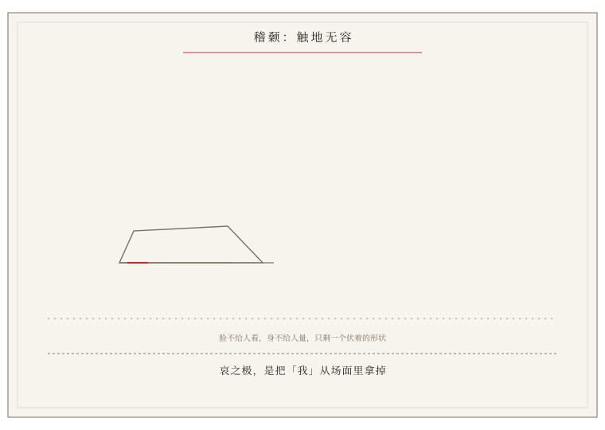

檀弓下 · 四·十六 · 第 341 课
拜、稽颡，哀戚之至隐也。稽颡，隐之甚也。
说什么事：拜与稽颡，是哀戚最沉痛的表现。而稽颡，又是其中最甚者。
落在哪一层：以「隐」量哀。论「哀到极处，反而不出声」。
为何编在此位：上节论复（向上呼），此节论稽颡（向下伏）。一呼一伏，皆哀之形。
【经】拜、稽顙，哀戚之至隱也。稽顙，隱之甚也。
【注】隐，痛也。稽颡者，触地无容。
【疏】孝子拜宾之时，先为稽颡而后拜者，哀戚之至痛，就拜与稽颡二事之中，稽颡为痛之甚。／此「拜稽颡」，「拜」文在上，以《周礼》言之，将拜稽颡。或可下文，殷、周并陈，此云「拜稽颡」，或举殷礼，故先言「拜」也。／注「隐痛」，《释诂》文也。
稽颡 以额触地，久而后起。颡，额也。
隐 注「隐，痛也」。非隐藏之义，是深痛之义。
至隐 痛之至深处。
无容 无所容身、无所自处之貌。注「触地无容」，谓其伏地而不复有仪容。
拜 跪而拱手俯首。与稽颡为两事，先后相成。
拜与稽颡，是哀戚到了最深处的表现。稽颡，又是其中最深的一种。
此章只辨一个字：隐。
「隐」不是「躲起来」，是「痛到无处安放」。注一句「触地无容」，把这个字落实：伏在地上，脸无处放，身无处安，这就是隐。
一章八字，讲一个动作的道理：为什么丧礼里最重的礼，是把头低到地上。
第一层 「隐」是痛的形状，不是痛的隐藏 今人读「隐」，多作「含蓄」「不露」。此注正相反：隐是痛之至，痛到不能形于言，只能形于身。
痛哭有声，尚是「可出」之痛；伏地无声，才是「不可出」之痛。故曰「至隐」。
第二层 「触地无容」：把脸放到地上 礼有「容」，容是仪态，是人在众人面前的样子。
稽颡把「容」去掉：脸不给人看，身不给人量，只剩一个伏着的形状。哀之极，是把「我」从场面里拿掉。
此一层，可比后世之「伏地」「抢地」「顿首」诸状，皆同一理：痛到无处可放，只好放在地上。
第三层 拜与稽颡之次 疏辨：礼先稽颡而后拜，乃成；此经「拜、稽颡」，「拜」文在上，或以殷礼先拜，或泛举二事。
此辨看似琐细，实关系一件大事：礼之先后，即是义之先后。先稽颡者，先尽其为子之痛；先拜者，先尽其为主之敬。
《檀弓》屡辨殷周之异，正因先后一改，礼之义亦改。
第四层 重耳的旧例 三百三十七课重耳「稽颡而不拜」，正在此章之理上：稽颡尽为子之痛，不拜止为后之谢。
知此章之义，则前章之三动更明：所谓「不成拜」，正是把礼停在「稽颡」这一半。
第五层 今日之用：最重的礼，往往最静 今人表达悲伤，多靠言语、靠声量、靠形式。
此节所示：最重的哀，是静的。不是无话，是话已不足；不是无仪，是仪已不能载。
与今日何干 今有丧仪，多尚排场，鼓乐、挽联、致辞，热闹一场。此节不说排场为非，只提醒：真正到极处的哀，是伏下去的，不是举起来的。办得热闹，未必是哀得深；哀得深，往往无声。
| 左 | 右 |
|---|---|
| 拜 | 跪而俯首 |
| 稽颡 | 以额触地 |
| 至隐 | 痛之至深处 |
| 隐 | 注：痛也 |
| 隐之甚 | 稽颡为最 |
| 触地 | 身无所安 |
| 无容 | 不复有仪容 |
| 先稽颡后拜 | 礼之常序 |
画一处素地上的一人伏形，视点自侧面平视略低。只画伏着的人的背脊、肩、散开的衣袖与触地的额，不画人面；衣摆在地上摊成一片，边缘有三两处褶皱。四周留大片空地，不置他物、不画席、不画阶。地上一道极淡的横痕，示额触之处。赭色只用在衣摆的一道褶。
